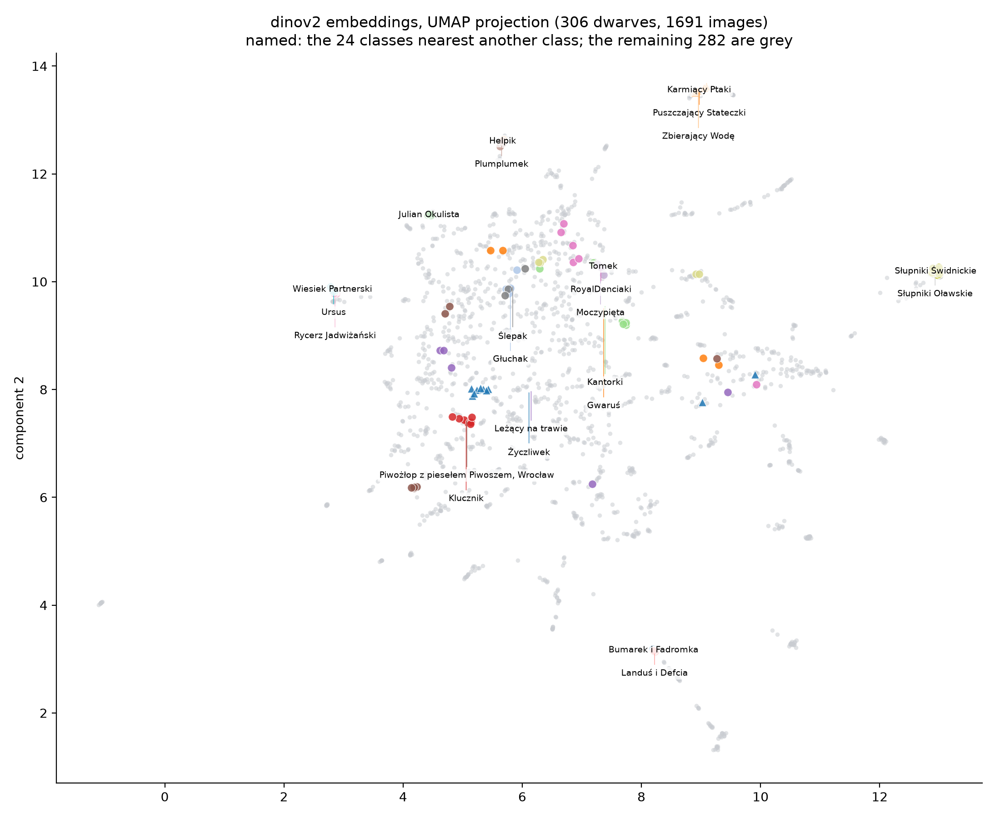

Which Wrocław dwarf is this?
Wrocław is scattered with several hundred small bronze dwarf statues, individually sculpted but sharing a vocabulary — the same scale, the same material, the same crouching poses and props. Upload a photograph and this page will tell you which one it is, running the model in your own browser.
or drop one here
Your photograph never leaves this device. Everything runs locally.
What the experiments found
Frozen embeddings are enough. DINOv2 identifies the right dwarf first time in 93.1% of queries across all 306 statues, and within five candidates 95.7% of the time — with no training of any kind. CLIP, which is what runs above, reaches 82.9%.
DINOv2 decays steadily; CLIP accelerates. Each doubling of the candidate pool costs DINOv2 0.79 accuracy points, a rate that holds across seven doublings. CLIP loses 2.06 and gets worse as the pool grows — a point apart at two candidates, ten apart at 306.
Narrowing by location makes it slightly harder, not easier. Real proximity pools lose to random pools at every pool size, worst at a 171–291 m radius — exactly the range a phone would use. Sculptors install lookalikes near each other.
Training helps only the weaker backbone. A linear probe gains CLIP 3.1 points and DINOv2 nothing at all. A supervised layer can partly repair an embedding space not laid out for instance detail; it has nothing to add to one that is.
The mistakes are explainable. Both backbones concentrate their errors on families of near-identical statues — above all the three Słupniki pillar dwarves, which the projection picks out on its own using nothing but centroid distance.
Accuracy against candidate-pool size
The experiment the project was built around. Each photograph is queried against its own dwarf plus a random draw of others, repeated over five seeds at every pool size. The shaded band is the spread across those seeds.
Show the numbers
| Pool size | DINOv2 | CLIP |
|---|
Does narrowing by location actually help?
Those pools are sampled at random. The real proposal is to narrow by location, so it can be measured rather than assumed. Each query is pooled with its nearest dwarves instead of random ones — same pool size, only the selection rule changes.
This covers 294 of the 306 statues. Wikidata places only 23 of them, so the rest are placed from their own photographs: most Commons files carry the position the camera was in. That is not the statue's position, so it was checked rather than assumed — across the statues that have both, the photo-derived position sits a median of 9 m from the Wikidata one, against a smallest pool radius of 171 m.
| Pool | Random | Geographic | Diff | Radius |
|---|---|---|---|---|
| 2 | 99.1% | 98.6% | −0.46 | 52 m |
| 5 | 97.9% | 97.0% | −0.89 | 171 m |
| 10 | 96.9% | 96.2% | −0.68 | 291 m |
| 20 | 96.3% | 95.6% | −0.76 | 467 m |
| 50 | 95.4% | 94.7% | −0.67 | 712 m |
| 100 | 94.7% | 94.2% | −0.48 | 909 m |
| 200 | 94.0% | 93.6% | −0.35 | 2,223 m |
| 294 (full) | 93.4% | 93.4% | 0.00 | — |
Geographic pools are harder than random pools of the same size — at every pool size, for both backbones. CLIP shows it about twice as strongly, peaking at −2.12 points at a pool of ten. Nothing here is sampled: a geographic pool is exact, so this is not seed noise.
The statues you can't separate are standing together
Look at where the penalty is largest. It peaks at a pool of five to ten — a radius of 171 to 291 metres — then fades as the pool widens, down to −0.35 at 2.2 km.
With 294 statues placed, the obvious explanation can be measured rather than assumed. Pairs that actually got confused are about twice as likely to stand within 100 m of each other as pairs that merely competed — 11.9% against 5.5%.
But that enrichment decays fast: 1.2× by 300 m, 1.1× by a kilometre. Co-location acts at the scale of a shared plinth, not a shared neighbourhood, and 88% of confused pairs stand more than 100 m apart. Most statues that look alike here simply look alike.
It is still enough to explain the curve — a pool at a 171 m radius only needs a modest enrichment of lookalikes to lose to a random one. Location narrowing does select for the confusions it needs to avoid; the effect is just smaller than the story wants it to be.
For a location-aware tool: a 291 m radius around a visitor covers about ten candidates and identifies at 96.2% top-1 with DINOv2. That is useful. It is also slightly worse than showing that visitor ten dwarves picked at random from the whole city, which is the part worth sitting with.
Does training beat retrieval?
All three methods scored on the same leave-one-out folds, with one classifier fitted per fold so no query ever sits in its own training data.
| Method | DINOv2 | CLIP | vs. retrieval |
|---|---|---|---|
| Cosine retrieval | 93.1% | 82.9% | — |
| Linear probe | 93.0% | 86.0% | −0.1 / +3.1 |
| Class prototypes | 85.1% | 74.6% | −8.0 / −8.3 |
The answer splits by backbone, which is the finding. The probe changes nothing for DINOv2 — two queries in 1,691 — and gains CLIP 3.1 points, though the confidence intervals still overlap slightly. Prototypes actively hurt, about eight points for both: averaging a class into one vector throws away the pose and viewpoint variation that makes a particular photograph matchable, and the more classes there are the more that costs.
One detail worth keeping, because it nearly became a wrong conclusion. At scikit-learn's
default C=1.0 the probe scored 66% — which reads as a decisive
result and is really just underfitting, since L2-normalised embeddings put per-dimension
magnitudes near 1/√d and that penalty crushes the weights. At C=100
it scores as above. A badly regularised baseline is worse than no baseline.
Where the errors are
Outright errors are still relatively rare — 116 of 1,691 for DINOv2, 289 for CLIP — so every query contributes its strongest wrong candidate, not just the failures. The dominant cluster is now the three Słupniki pillar dwarves, near-identical statues installed on different streets.

What this does not show
?selftest=full to this page's URL and your browser will re-embed all 1,691
reference photographs and score the protocol itself.